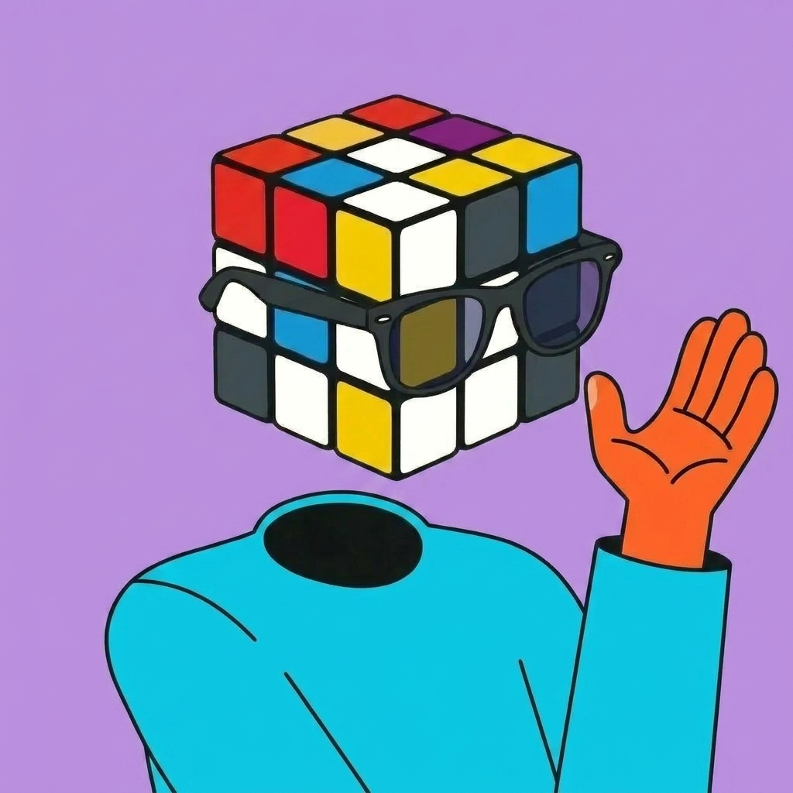
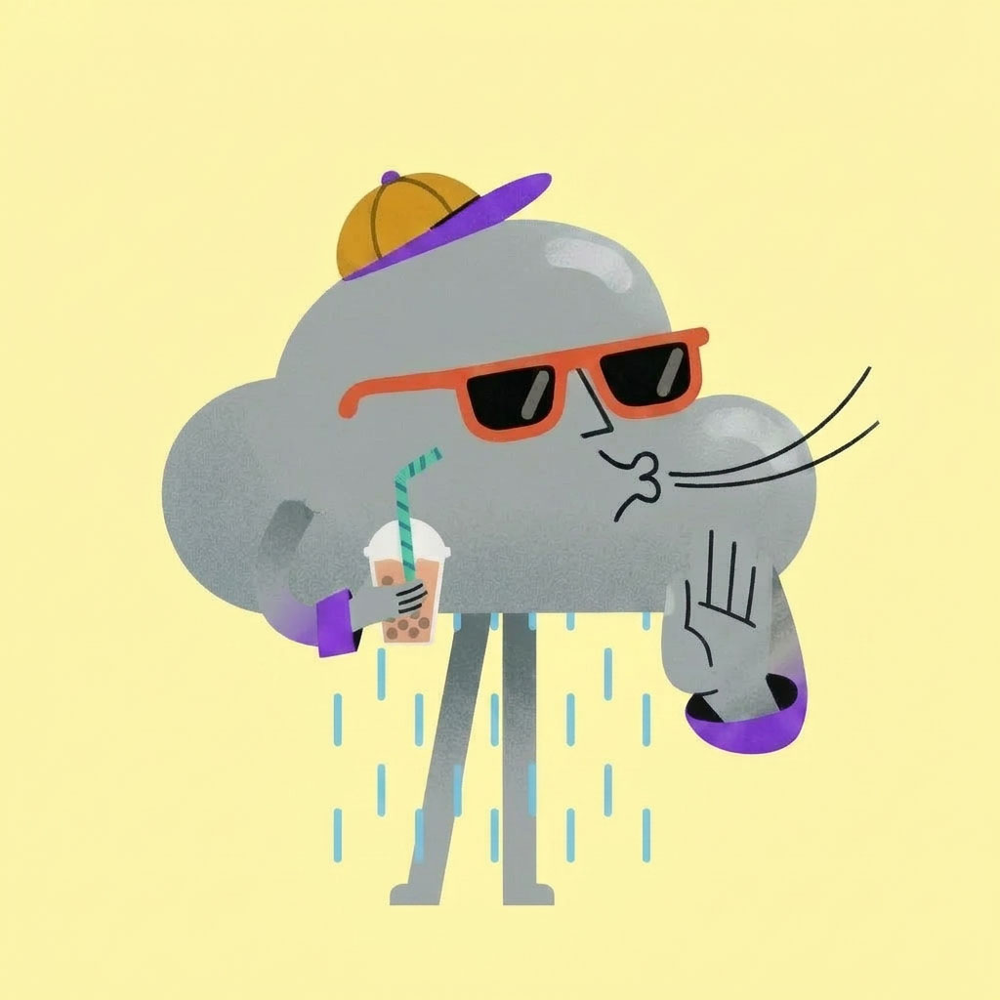
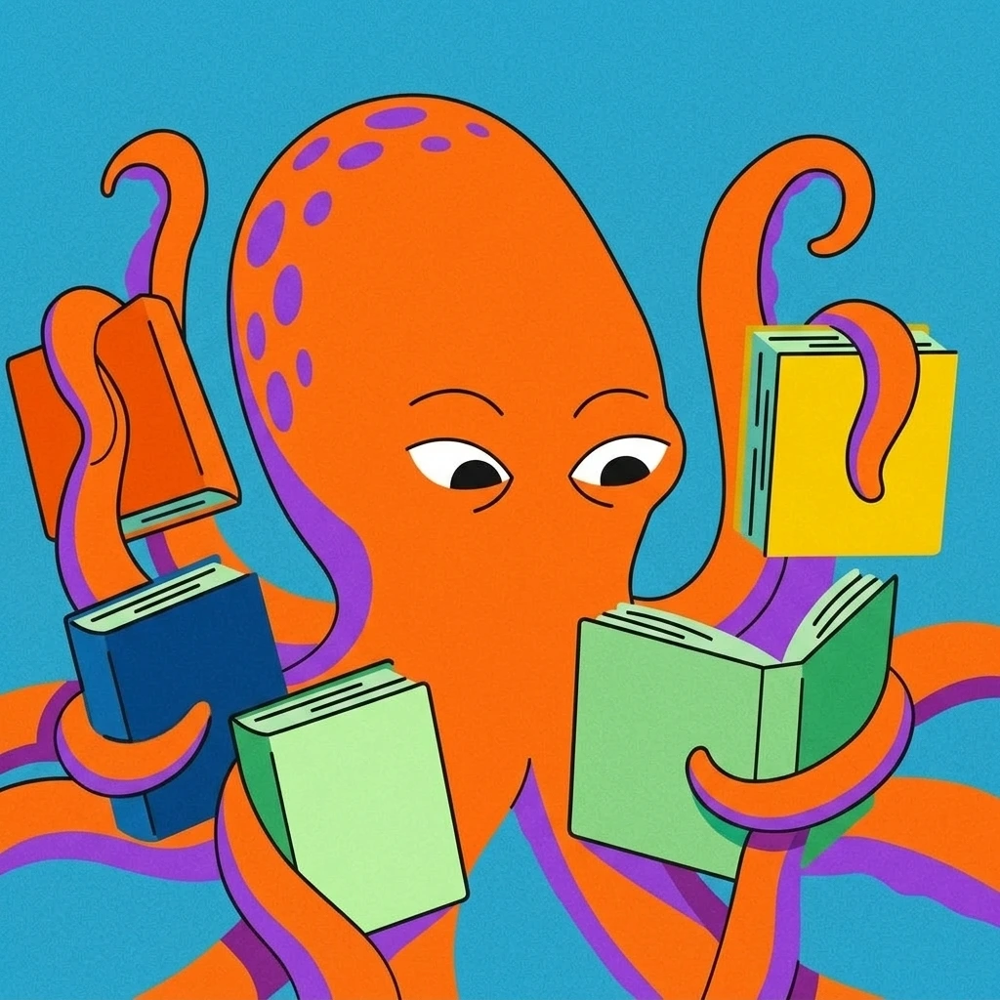

Character Development
Meet the
Yahoo Scouts
One visual direction for Yahoo — explored as a spectrum of possibilities that live side by side, from human characters to fully iconic ones. Built to carry humor, to be endlessly memeable, and to connect with a broad, everyday audience.


In context
Scouts Design on Product
All three possibilities at home in the product — the scouts as your personal squad across News, Finance, Sports and Weather.

The system
One direction,
three possibilities
Not competing routes, but a single visual language with room to flex — the same scouts expressed three ways, from grounded and human to fully iconic. All three can live side by side across the product.
Humanoid
The concept fused onto a human character — grounded and editorial.

Endlessly curious — turns every question into a small, joyful experiment.
All energy and hustle — the teammate who never stops moving.

Quietly clever — the tinkerer making tomorrow feel effortless and fun.

Reads the sky's every mood — sunny, stormy, always game.
A head full of stories — always mid-chapter, always ready for one more.

Head in the stars — reads the room and the cosmos, always sensing what's next.
Iconic
Surreal and anthropomorphic — the object takes on a life of its own. Made to be shared.
Endlessly curious — turns every question into a small, joyful experiment.

All energy and hustle — the teammate who never stops moving.

Quietly clever — the tinkerer making tomorrow feel effortless and fun.
Reads the sky's every mood — sunny, stormy, always game.

Always one more level — quick thumbs, quicker grin, never quite ready to log off.
Fully Iconic
The object becomes the character entirely — no human form at all. A first look, with more scouts on the way.

Pure character, no human strings — the sky itself, out for a stroll and a bubble tea.

All spine and story — the book itself sprung to life, no reader required.
Coming to life
Animation tests
First animation tests — bringing three of the scouts to life.